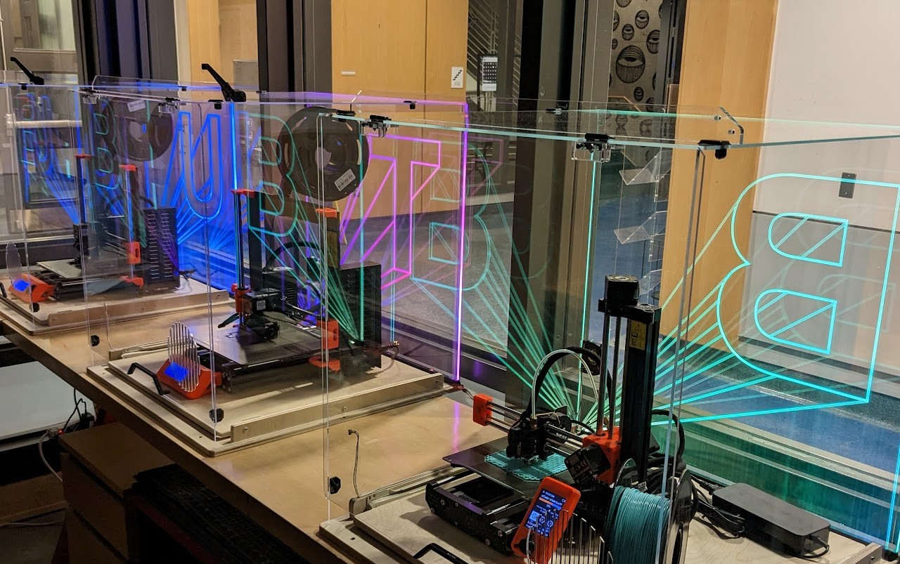

3D Printing
3D Printing equipment and materials are labeled PURPLE.
FACULTY: Class assignments requiring 3D printing should be facilitated by LAs or TAs, or instructors.
STUDENTS: Assistance with 3D Printing for class assignments should be coordinated with class LAs or TAs first, then BTU Mischief Makers.
EVERYBODY: 3D printing hardware/software update frequently! Make sure you stay up to date, too.
The Revolution will be printed...
3D Printers located in the main space are for intended use only! Additional 3D printers are available for experimentation. Contact a Mischief Maker to set it up. We got you!
3D Printing requires an orientation BTU Lab Calendar.
***Jobs are run on a first-come-first-served basis***
PRUSA SLICER software is provided and required !
Equipment
- Prusa Mk4 FDM printer (x3)
- Prusa Mk4S FDM printer (x2)
- Prusa Mini FDM printer (x2)
- Prusa Mk4S MMU3 FDM printer (multicolor!)
- Filament storage shelf (located in laser room)
- 1.75mm PLA filament (black, and random colors)
- Additional materials allowed only with staff approval.
"Intended" Use of BTU Lab 3D Printers
These guidelines ensure the safety and proper use of the 3D printers in the BTU Lab.
- Do not alter any part of the machine.
- BTU uses PLA material, only. UNLESS other materials are agreed upon with BTU staff.
- Do not train yourself on the use of the machine. There's more to it than YouTube thinks... We're here to help you learn, hands on.
- Do not use third-party slicing software. Use Prusa Slicer, as specified for each machine.
- ***We are updating our file management system to streamline your work. For now, please work directly with BTU staff to get your parts going.***